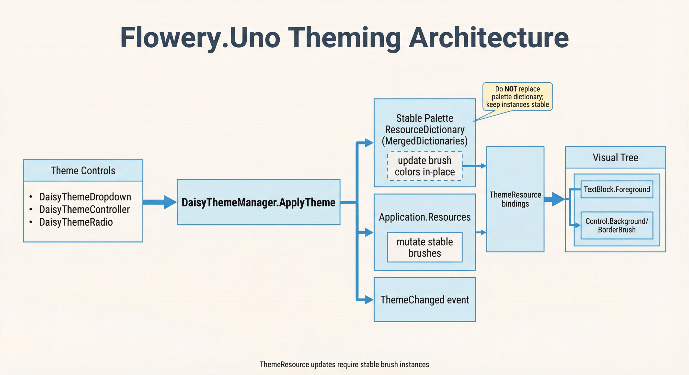

DaisyThemeManager is the central theme loader/applicator for the 35+ built-in DaisyUI themes. It tracks available themes, applies palette ResourceDictionaries, and notifies listeners via ThemeChanged. Helpers expose current/alternate theme names and light/dark metadata.
| Scenario | Recommended API |
|---|---|
| Switch between built-in themes (Light, Dark, Dracula, etc.) | DaisyThemeManager.ApplyTheme() ✓ |
| Industry-specific product themes (96 palettes) | DaisyProductThemeDropdown or ProductPalettes ✓ |
| Custom theme application strategy (in-place updates, persistence) | Set DaisyThemeManager.CustomThemeApplicator |
| Load custom themes from CSS at runtime | DaisyThemeLoader.ApplyThemeToApplication() |
In addition to the 35+ DaisyUI themes, Flowery.Uno includes 96 industry-specific product palettes from the UI UX Pro Max Skill project. These are professionally crafted color schemes for specific industries:
| Industry | Example Themes |
|---|---|
| SaaS / Enterprise | SaaS, Enterprise, StartupFresh |
| Fintech / Crypto | FintechTrust, FintechModern, CryptoNeon |
| Healthcare | HealthCalm, HealthPro, MedicalClean |
| E-commerce | EcommModern, EcommLuxury, EcommMinimal |
| EdTech | EduBright, EduPro, LearningFun |
| And 7+ more... | Travel, Food, Real Estate, Fitness, Gaming, Social, Productivity |
Use the DaisyProductThemeDropdown control for easy theme selection, or access programmatically via ProductPalettes:
// Get all product theme names
var allProductThemes = ProductPalettes.GetAllNames();
// Apply a product theme
var palette = ProductPalettes.Get("FintechTrust");
DaisyThemeManager.RegisterTheme(
new DaisyThemeInfo("FintechTrust", FloweryColorHelpers.IsDark(palette.Base100)),
() => DaisyPaletteFactory.Create(palette));
DaisyThemeManager.ApplyTheme("FintechTrust");See DaisyProductThemeDropdown for full documentation.
Key difference:DaisyThemeManager.ApplyTheme() adds palette resources to MergedDictionaries. Best for switching between the 35 built-in themes.DaisyThemeLoader.ApplyThemeToApplication() updates resources in-place within ThemeDictionaries. Use this for custom themes loaded from CSS files at runtime.using Flowery.Controls;
using Flowery.Theming;
// Built-in themes: use DaisyThemeManager
DaisyThemeManager.ApplyTheme("Synthwave");
// Custom CSS themes: use DaisyThemeLoader
var theme = DaisyUiCssParser.ParseFile("mytheme.css");
DaisyThemeLoader.ApplyThemeToApplication(theme);App.xaml must include Flowery.Uno's Generic.xaml in Application.Resources.MergedDictionaries:
<Application.Resources>
<ResourceDictionary>
<ResourceDictionary.MergedDictionaries>
<ResourceDictionary Source="ms-appx:///Flowery.Uno/Themes/Generic.xaml" />
</ResourceDictionary.MergedDictionaries>
</ResourceDictionary>
</Application.Resources>| Member | Description |
|---|---|
AvailableThemes |
Read-only list of visible registered themes, ordered by preference and name or configured display text. |
AddTheme(originalName, displayName, preferred) |
Adds or updates global list entries for both dropdown types without applying a theme. |
RemoveThemeOverride(originalName) |
Removes a global display/order override without unregistering the theme. |
ExcludedThemes |
Assign a collection of hidden names. The getter returns a read-only snapshot. |
HideTheme(name) / ShowTheme(name) |
Add or remove an exclusion at runtime. Return true when the exclusion changes. |
IsThemeVisible(name) |
Checks whether a name is eligible for display, even before registration. |
PreferredThemes |
Default preferred names for entries without an explicit AddTheme flag. Assign [] to clear them. |
RegisterTheme(info, paletteFactory) |
Adds or replaces a theme. Raises AvailableThemesChanged for new names; built-in names only when NotifyForInternalThemesChanged is true. |
GetPaletteFactory(string name) |
Returns the factory passed to RegisterTheme, or null if the theme is unknown. |
TryCreatePalette(string name, out palette) |
Creates a palette from the registered factory. Returns false for unknown themes or when the factory throws. Used by theme previews. |
AvailableThemesChanged |
Event fired when RegisterTheme adds a new theme name (built-in themes only when NotifyForInternalThemesChanged is true), and whenever exclusions, preferred names or global overrides change. |
NotifyForInternalThemesChanged |
When true, RegisterTheme also raises AvailableThemesChanged for built-in themes. Default is false. |
ApplyTheme(string name) |
Creates a palette via DaisyPaletteFactory, applies it in-place to the stable palette dictionary, and raises ThemeChanged. Uses CustomThemeApplicator if set. |
SuppressThemeApplication |
When true, ApplyTheme only updates internal state without actually applying. Use during initialization. |
CustomThemeApplicator |
Optional Func delegate. When set, called instead of the default MergedDictionaries approach. |
SetCurrentTheme(string name) |
Updates internal state and fires ThemeChanged. Used by custom applicators after applying a theme. |
CurrentThemeName |
Name of the currently applied theme. |
BaseThemeName |
Default/unchecked theme name (default "Light"). |
AlternateThemeName |
Current theme if not the base; otherwise "Dark". |
ThemeChanged |
Event fired with the new theme name after successful application. |
IsDarkTheme(string name) |
Returns whether the theme is marked as dark. |
Use AddTheme to configure both dropdown types globally, without replacing their existing lists:
DaisyThemeManager.AddTheme("Business", "MyBusiness", false);
DaisyThemeManager.AddTheme("TheaterCinema", "DarkAndRed", true);
DaisyThemeManager.AddTheme("Corporate", "Office", true);The arguments are the original name, the display text, and the preferred flag. Standard, registered custom, and product theme names are supported; unknown names raise ArgumentException. Original names are case-insensitive, and repeated names update the entry without adding a duplicate. Product additions are registered globally, but AddTheme applies no palette.
Preferred entries appear first, sorted by display text, followed by a separator line and the other entries. PreferredThemes supplies defaults for entries without an explicit AddTheme flag. Exclusions always take precedence.
An individual dropdown can override a global entry. Local settings win for that original name only:
themeDropdown.AddTheme("Business", "My local business", true);
productThemeDropdown.AddTheme("TheaterCinema", "Local cinema", false);
themeDropdown.RemoveThemeOverride("Business"); // back to the manager's entry
DaisyThemeManager.RemoveThemeOverride("TheaterCinema"); // registered themes stay registeredDisplay text is UI text only. SelectedTheme, ApplyTheme, HideTheme, ShowTheme, ExcludedThemes, PreferredThemes and RemoveThemeOverride use the original name.
// Before creating controls
DaisyThemeManager.ExcludedThemes = ["Cyberpunk", "SaaS"];
DaisyThemeManager.PreferredThemes = ["Business", "MicroSaaS"];
// At runtime, on the UI thread; loaded dropdowns update automatically
DaisyThemeManager.HideTheme("Cyberpunk");
DaisyThemeManager.ShowTheme("Cyberpunk");
// Restore the normal lists
DaisyThemeManager.ExcludedThemes = [];
DaisyThemeManager.PreferredThemes = [];Both setters copy the names and replace the previous set; the getters return read-only snapshots. Names are case-insensitive and may refer to themes that are not registered yet. These settings neither select nor apply a theme. A hidden theme can still be applied with ApplyTheme.
DaisyPaletteFactory (code-based); ensure the theme name matches AvailableThemes.ResourceDictionary stable and update its brushes in-place. Removing/replacing the dictionary breaks ThemeResource bindings because controls keep references to the old brush instances.// Apply Synthwave
DaisyThemeManager.ApplyTheme("Synthwave");
// Toggle between base/alternate themes
var target = DaisyThemeManager.CurrentThemeName == DaisyThemeManager.BaseThemeName
? DaisyThemeManager.AlternateThemeName
: DaisyThemeManager.BaseThemeName;
DaisyThemeManager.ApplyTheme(target);Theme controls like DaisyThemeDropdown, DaisyThemeController, and DaisyThemeRadio automatically sync to CurrentThemeName during construction. However, in complex scenarios with many controls or custom initialization order, you can use SuppressThemeApplication for explicit control:
// In App.xaml.cs OnLaunched:
var savedTheme = LoadThemeFromSettings() ?? "Dark";
// Option 1: Simple apps - just apply the theme first
// Theme controls will sync to it automatically
DaisyThemeManager.ApplyTheme(savedTheme);
// Option 2: Complex apps - suppress during UI construction
DaisyThemeManager.SuppressThemeApplication = true;
DaisyThemeManager.ApplyTheme(savedTheme); // Only updates internal state
// Create window...
// ...
// After initialization - now actually apply
DaisyThemeManager.SuppressThemeApplication = false;
DaisyThemeManager.ApplyTheme(savedTheme); // Actually applies> Full Migration Example - Step-by-step guide for integrating Flowery.Uno into existing apps with custom resources.
For apps that need custom theme application logic (e.g., in-place ThemeDictionary updates, persisting settings), set the CustomThemeApplicator delegate at startup:
// In App.xaml.cs OnLaunched:
DaisyThemeManager.CustomThemeApplicator = themeName =>
{
var themeInfo = DaisyThemeManager.GetThemeInfo(themeName);
if (themeInfo == null) return false;
// Get the palette from DaisyPaletteFactory
var palette = DaisyPaletteFactory.Create(themeInfo.Name);
var app = Application.Current;
if (app == null) return false;
// Keep palette dictionary stable; update or add it
var existingPalette = app.Resources.MergedDictionaries
.FirstOrDefault(d => d.ContainsKey("DaisyBase100Brush"));
if (existingPalette == null)
{
app.Resources.MergedDictionaries.Add(palette);
}
else
{
foreach (var key in palette.Keys)
{
existingPalette[key] = palette[key];
}
}
// Persist to settings
Windows.Storage.ApplicationData.Current.LocalSettings.Values["Theme"] = themeName;
// Notify listeners
DaisyThemeManager.SetCurrentTheme(themeName);
return true;
};All built-in theme controls (DaisyThemeDropdown, DaisyThemeController, DaisyThemeRadio, DaisyThemeSwap) automatically use the custom applicator when set.